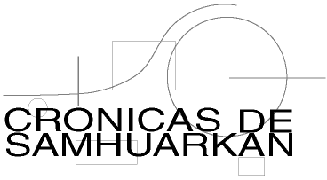
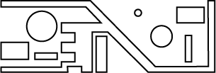

Primeros bocetos aquí
Las Crónicas de Samhuarkan Es una historia nacida de una metáfora y que luego empezó a construirse a sí misma. En un futuro se podría convertir en novela gráfica (estilo comic) pero por lo pronto no es más que una historia.
Aquí están los episodios
pirulo@rulestheweb.com